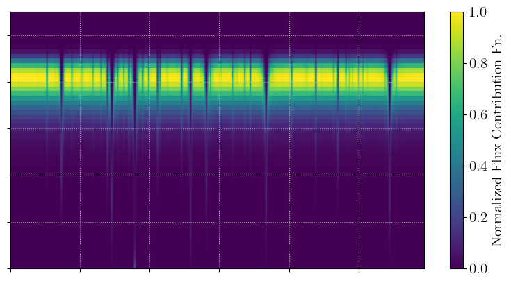
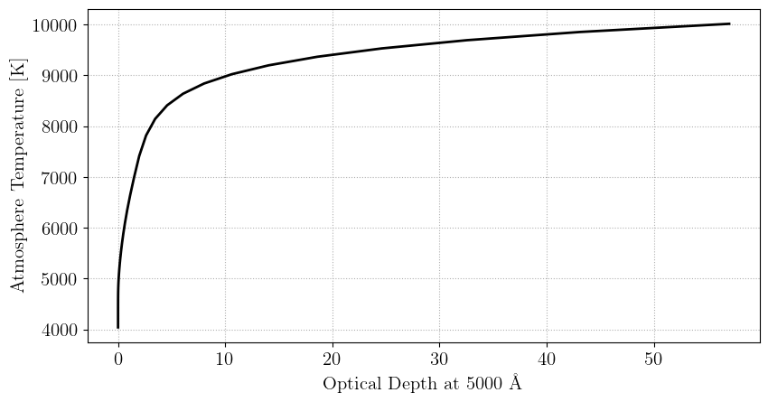
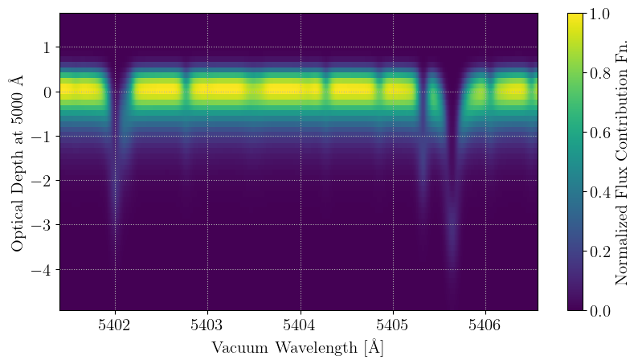
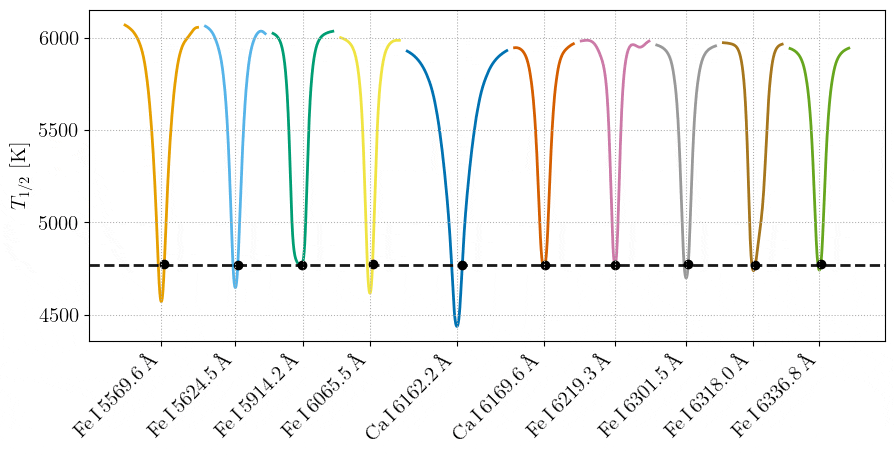
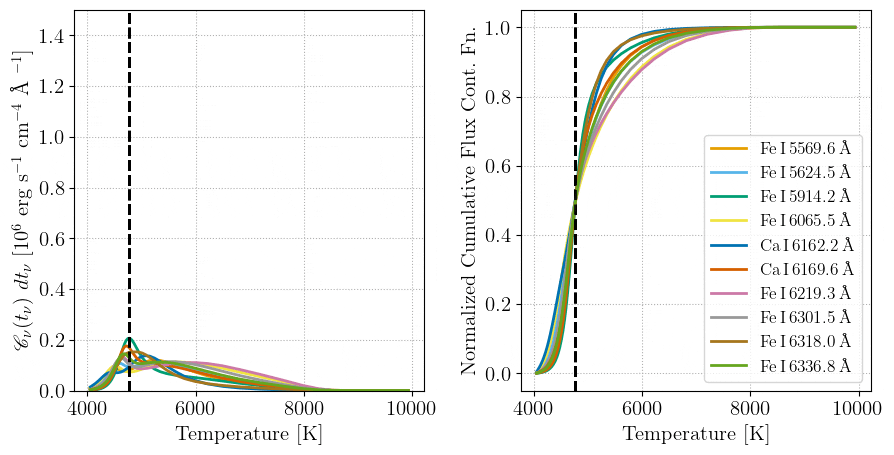

Manipulating Contribution Functions
Formation temperatures are computed from the model contribution functions, and can be thought of as a simple summary statistic thereof. For some users, it may be advantageous to view and manipulate these contribution functions.
Following a procedure like that in the Basic Tutorial, we can see that the FormTempResult composite type also contains a cont_func field. We can plot this like so:
using Korg
using PythonPlot; plt = PythonPlot.pyplot
using FormationTemps; FT = FormationTemps
plt.style.use(joinpath(FT.moddir, "fig.mplstyle"))
# get the linelist
linelist = Korg.read_linelist(joinpath(FT.datdir, "Sun_VALD.lin"))[16000:16100]
# set stellar parameters
Teff = 5777.0
logg = 4.44
Fe_H = 0.0
vsini = 2100.0
ζ_RT = 3400.0 # radial-tangential macroturbulent broadening
ξ = 850.0 # microturbulent broadening
# create StellarProps composite type to hold everything
star_props = StellarProps(Teff=Teff, logg=logg, Fe_H=Fe_H,
vsini=vsini, v_macro=ζ_RT, v_micro=ξ)
# get the flux + formation temperature spectra
form_temp_result = FT.calc_formation_temp(star_props, linelist; Δλ=0.005)
# parse the result
wavs = form_temp_result.wavs
flux = form_temp_result.flux
temp = form_temp_result.form_temps
cont_func = form_temp_result.cont_func
# plot the output
fig, ax1 = plt.subplots(figsize=(9.6,4.8))
img = ax1.pcolormesh(cont_func ./ maximum(cont_func), cmap="viridis")
ax1.set_xticklabels([])
ax1.set_yticklabels([])
fname = joinpath(FT.moddir, "docs", "src", "static", "cont_func_simple_example.png")
cbar = fig.colorbar(img, ax=ax1)
cbar.set_label("{\\rm Normalized Flux Contribution Fn.}")
fig.savefig(fname, bbox_inches="tight")
plt.show()
plt.clf(); plt.close()

We can also add axis values. The x-axis is wavelength, and y-axis is a coordinate in the model atmosphere. Let's first parse out and view the model atmosphere structure from the FormTempResult composite type instance.
# parse the atmosphere
atm = form_temp_result.atmosphere
zs = get_zs(atm)
Ts = get_Ts(atm)
τs = get_τs(atm)
# plot temperature structure vs optical depth (if available) or height
fig, ax1 = plt.subplots(figsize=(9.6,4.8))
if isempty(τs)
ax1.plot(zs ./ 1e5, Ts, c="k") # fall back to height in km
ax1.set_xlabel("{\\rm Height [km]}")
else
ax1.plot(τs, Ts, c="k")
ax1.set_xlabel("{\\rm Optical Depth at 5000 \\AA}")
end
ax1.set_ylabel("{\\rm Atmosphere Temperature [K]}")
fname = joinpath(FT.moddir, "docs", "src", "static", "atmosphere.png")
fig.savefig(fname, bbox_inches="tight")
plt.show()
plt.clf(); plt.close()

Now we can zoom-in on some lines (to better see the structure of the contribution function) and add on the axis values:
# choose some lines to zoom into
lines_to_focus = linelist[5:25]
rest_wls = [1e8 * l.wl for l in lines_to_focus]
buffer = 0.5
idx1 = findfirst(x -> x .>= minimum(rest_wls) - buffer, wavs)
idx2 = findfirst(x -> x .>= maximum(rest_wls) + buffer, wavs)
# get the bounding values for pcolormesh
xedges = view(wavs, idx1:idx2)
yedges = log10.(elav(τs))
yedges2 = elav(zs ./ 1e7)
cfuncp = view(cont_func, :, idx1:idx2)
# plot the contribution function
fig, ax1 = plt.subplots(figsize=(9.6,4.8))
img = ax1.pcolormesh(xedges, yedges, cfuncp ./ maximum(cfuncp), cmap="viridis")
ax1.set_xlabel("{\\rm Vacuum Wavelength [\\AA]}")
ax1.set_ylabel("{\\rm Optical Depth at 5000 \\AA}")
cbar = fig.colorbar(img, ax=ax1)
cbar.set_label("{\\rm Normalized Flux Contribution Fn.}")
fname = joinpath(FT.moddir, "docs", "src", "static", "cont_func_example.png")
fig.savefig(fname, bbox_inches="tight")
plt.show()
plt.clf(); plt.close()

Formation temperatures can lie to you!
We can also slice through the contribution functions of individual pixels in lines. Doing so, we can demonstrate that wavelength elements which share a formation temperature need not have the same (or even similar) contribution functions! In each frame of the below animations, the contribution functions for the black pixel in each absorption line are shown. These pixels share the same formation temperature (within a tolerance of a couple Kelvin), yet their contribution functions look very different in the cores of the lines! Of course, the contribution functions tend to each other toward the continuum, but the bulk of the radial velocity information is found where the derivative of the spectrum is highest.

